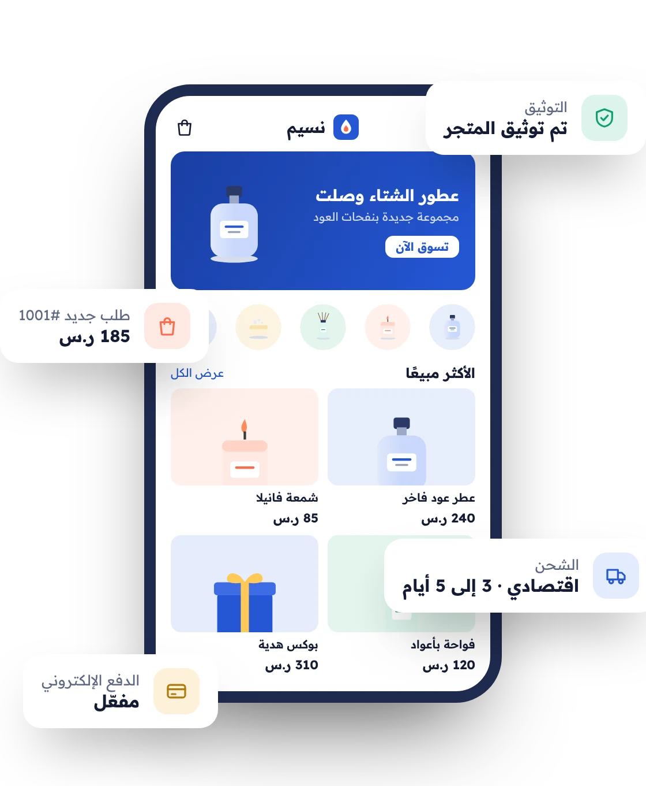
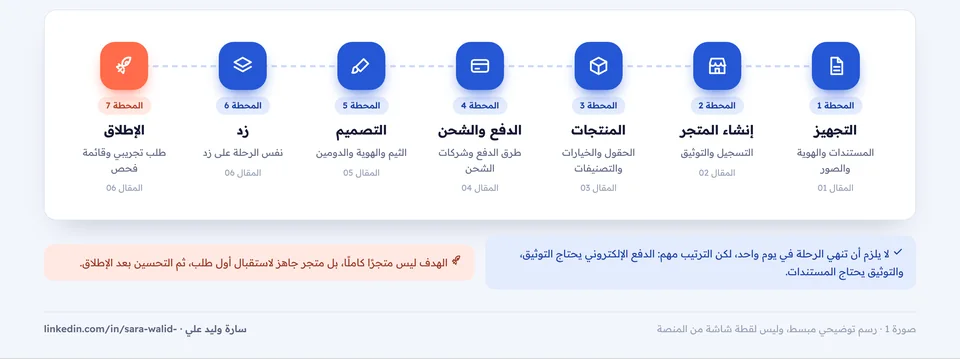
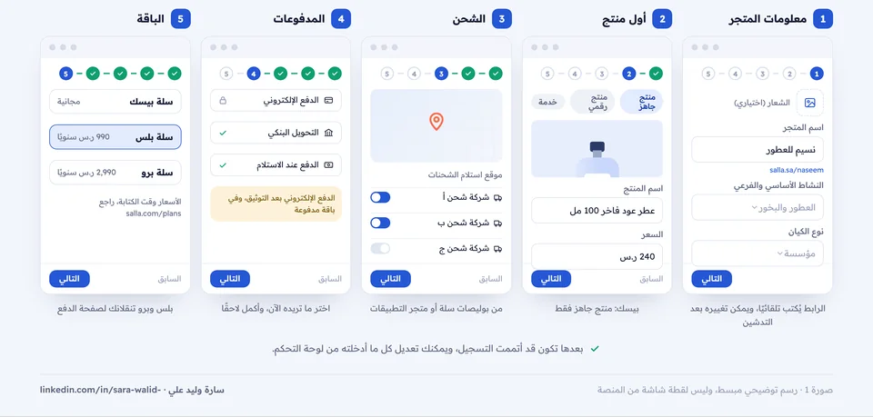
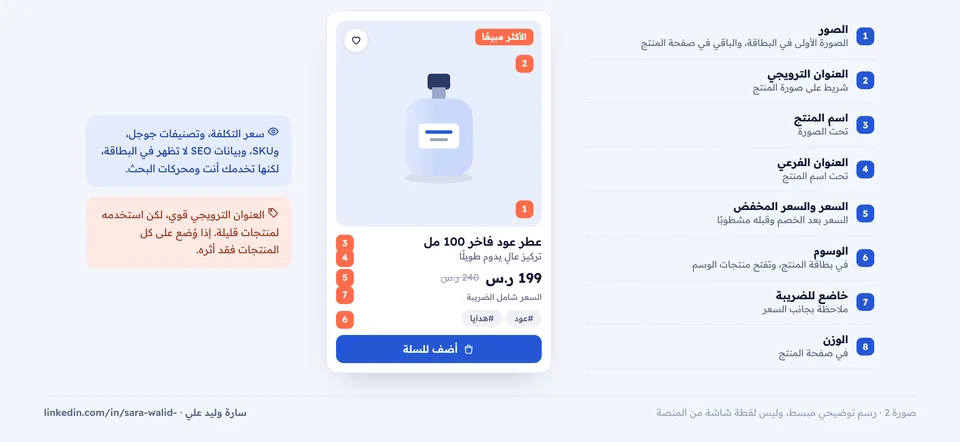
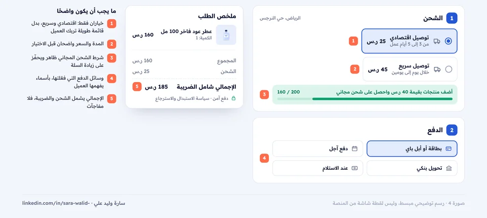
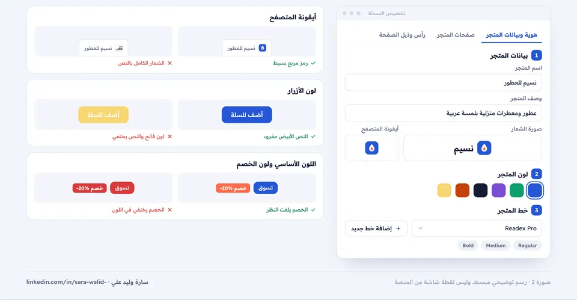
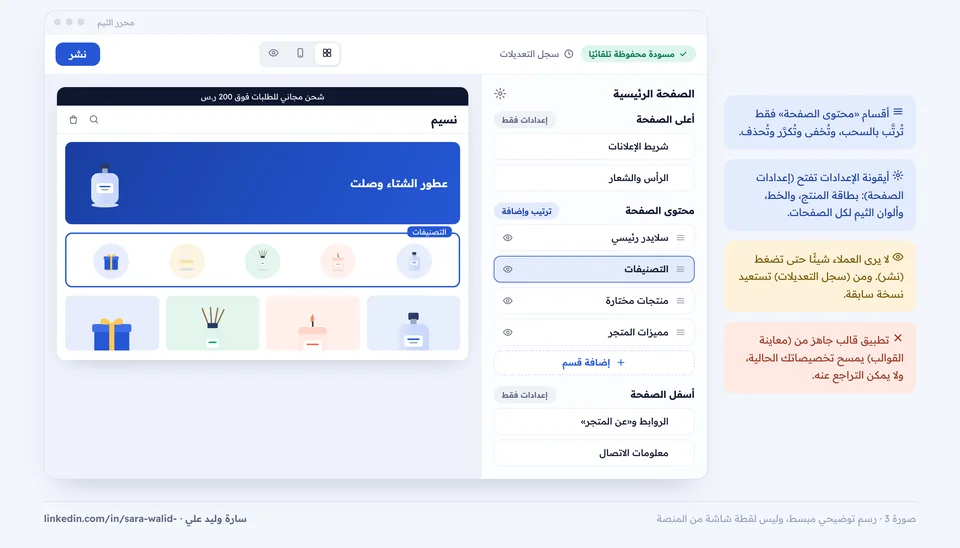

أنشئ متجرك
على سلة وزد
خطوة بخطوة
من تجهيز المستندات حتى أول طلب: التسجيل والتوثيق، والمنتجات، والدفع والشحن، وتخصيص التصميم والدومين، ثم قائمة إطلاق تصلح للمنصتين. كل خطوة من مراكز المساعدة الرسمية ومعها رابط مصدرها.

الهدف ليس متجرًا كاملًا، بل متجر جاهز لاستقبال أول طلب.
المقالات

قبل أن تبدأ: جهّز متجرك قبل التسجيل
المستندات حسب نوع الكيان، وهوية المتجر، وأول خمسة منتجات، واختيار المنصة والباقة

إنشاء متجرك على سلة وتوثيقه
رحلة الإنشاء الخمس، ومتطلبات التدشين، والتوثيق حسب الكيان، وخريطة لوحة التحكم

المنتجات والتصنيفات على سلة
حقول المنتج وأين تظهر للعميل، والخيارات وكمياتها، وشجرة التصنيفات

الدفع والشحن على سلة
شروط الدفع الإلكتروني، وطرق الدفع حسب الباقة، وإعداد الشحن الموحد

تخصيص تصميم متجرك على سلة
الثيم، والهوية، وعناصر الصفحة الرئيسية، والهيدر والفوتر، والدومين

نفس الرحلة على زد، وقائمة الإطلاق
زد خطوة بخطوة، ومقارنة المنصتين، والطلب التجريبي، وقائمة الإطلاق
كيف تقرأ السلسلة؟
- أول مرة تنشئ متجرًا: اقرأ المقالات بالترتيب، وطبّق كل مقال قبل أن تنتقل للتالي.
- تستخدم زد: ابدأ بالمقال 01 ثم 06، والمقالان 03 و05 مفيدان لك أيضًا.
- متجرك موجود: ابدأ من المقال 05، ثم قائمة الإطلاق في المقال 06.
اقرأها على Notion
كل ملف فيه المقال بصيغة Markdown مع صوره. من Notion اختر Import ثم Text & Markdown.